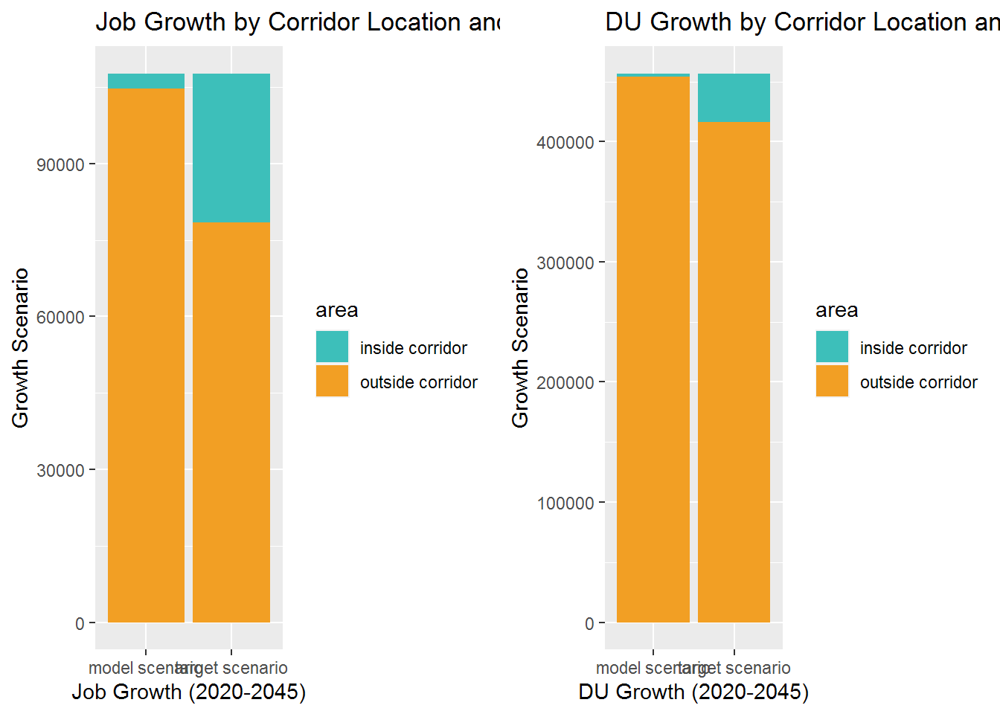
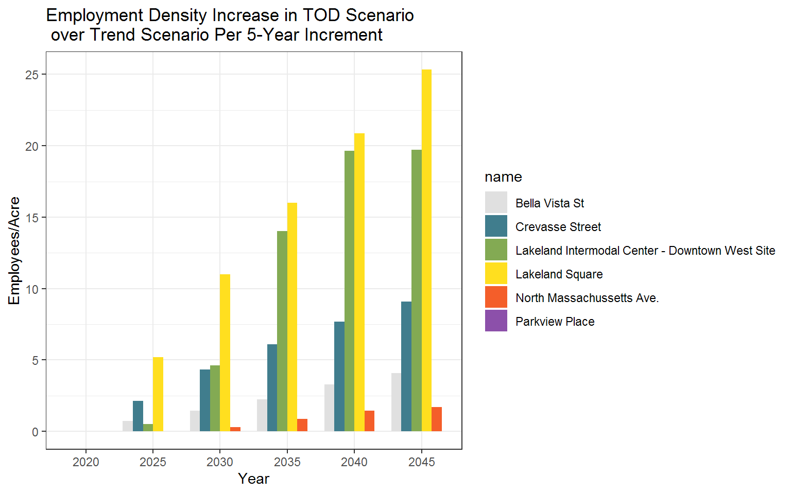

Trend Scenario
The following series of charts display anticipated employment and dwelling unit densities by year and scenario.
The “trend” scenario is comprised of the Polk TPO 2045 LRTP Land Use Forecast.
The “TOD” scenario is based on the 2045 LRTP land use, but assumes an intensified amount of dwelling unit and job growth within proposed station areas.
These plots reveal how the exiting and future year density targets, which are included on the charts. These targets are based on BRT thresholds in “A Framework for Transit Oriented Development in Florida.” In addition, mean corridor typology values from “TCRP 187: Livable Transit Corridors: Methods, Metrics, Strategies” are provided at the corridor level.
Note: Station area growth charts assume all TOD scenario growth occurs inside the portion of each TAZ that is in a station area. Corridor-wide assumptions look only at the TAZ level, and assume growth is distributed evenly across each TAZ
Corridor Dwelling Unit Density

Corridor Employment Density by Scenario

Station Area Dwelling Unit Density

TOD Scenario Density Increase Over Trend Scenario per Station Area
Dwelling Unit Difference Per 5-Year Increment

Employment Difference Per 5-Year Increment

Table of Dwelling Unit Density Values by Station Area
Trend Scenario
| name | Tot_DU_20 | Tot_DU_25 | Tot_DU_30 | Tot_DU_35 | Tot_DU_40 | Tot_DU_45 |
|---|---|---|---|---|---|---|
| Lakeland Intermodal Center - Downtown West Site | 0.81 | 0.99 | 1.20 | 1.44 | 1.69 | 1.98 |
| Lakeland Square | 1.93 | 2.00 | 2.07 | 2.15 | 2.23 | 2.33 |
| Bella Vista St | 1.74 | 1.79 | 1.85 | 1.91 | 1.98 | 2.06 |
| Crevasse Street | 2.20 | 2.31 | 2.42 | 2.54 | 2.67 | 2.82 |
| Parkview Place | 2.40 | 2.54 | 2.69 | 2.85 | 3.03 | 3.24 |
| North Massachussetts Ave. | 2.36 | 3.25 | 3.50 | 3.76 | 4.05 | 4.38 |
TOD Scenario
| name | tod_du_20_final | tod_du_25_final | tod_du_30_final | tod_du_35_final | tod_du_40_final | tod_du_45_final |
|---|---|---|---|---|---|---|
| Lakeland Intermodal Center - Downtown West Site | 0.81 | 1.81 | 2.98 | 4.25 | 5.65 | 7.23 |
| Lakeland Square | 1.93 | 2.95 | 4.05 | 5.16 | 6.39 | 7.83 |
| Bella Vista St | 1.74 | 2.44 | 3.18 | 3.97 | 4.83 | 5.82 |
| Crevasse Street | 2.20 | 2.81 | 3.49 | 4.20 | 4.98 | 5.89 |
| Parkview Place | 2.40 | 2.69 | 3.01 | 3.35 | 3.73 | 4.16 |
| North Massachussetts Ave. | 2.36 | 3.51 | 3.82 | 4.15 | 4.52 | 4.93 |
Table of Dwelling Units by Station Area
Trend Scenario
| name | Tot_DU_20 | Tot_DU_25 | Tot_DU_30 | Tot_DU_35 | Tot_DU_40 | Tot_DU_45 | acres |
|---|---|---|---|---|---|---|---|
| Lakeland Intermodal Center - Downtown West Site | 405 | 498 | 605 | 721 | 850 | 995 | 502 |
| Lakeland Square | 968 | 1003 | 1041 | 1079 | 1121 | 1171 | 502 |
| Bella Vista St | 872 | 900 | 930 | 962 | 996 | 1035 | 502 |
| Crevasse Street | 1107 | 1158 | 1215 | 1274 | 1340 | 1416 | 502 |
| Parkview Place | 1204 | 1274 | 1351 | 1433 | 1524 | 1628 | 502 |
| North Massachussetts Ave. | 1186 | 1634 | 1757 | 1889 | 2036 | 2201 | 502 |
TOD Scenario
| name | tod_du_20_final | tod_du_25_final | tod_du_30_final | tod_du_35_final | tod_du_40_final | tod_du_45_final | acres |
|---|---|---|---|---|---|---|---|
| Lakeland Intermodal Center - Downtown West Site | 405 | 909 | 1495 | 2133 | 2839 | 3634 | 502 |
| Lakeland Square | 968 | 1481 | 2035 | 2591 | 3210 | 3936 | 502 |
| Bella Vista St | 872 | 1224 | 1597 | 1997 | 2429 | 2924 | 502 |
| Crevasse Street | 1107 | 1414 | 1753 | 2108 | 2504 | 2958 | 502 |
| Parkview Place | 1204 | 1353 | 1514 | 1684 | 1875 | 2092 | 502 |
| North Massachussetts Ave. | 1186 | 1766 | 1921 | 2086 | 2271 | 2478 | 502 |
Station Area Employment Density

Table of Employment Density Values by Station Area
Trend Scenario
| name | TotEmp2020 | TotEmp2025 | TotEmp2030 | TotEmp2035 | TotEmp2040 | TotEmp2045 |
|---|---|---|---|---|---|---|
| Lakeland Intermodal Center - Downtown West Site | 7.85 | 7.88 | 8.10 | 8.61 | 8.91 | 8.92 |
| Lakeland Square | 3.89 | 3.90 | 3.91 | 3.92 | 3.93 | 3.94 |
| Bella Vista St | 4.91 | 5.52 | 6.11 | 6.76 | 7.62 | 8.26 |
| Crevasse Street | 2.52 | 2.56 | 2.61 | 2.64 | 2.67 | 2.69 |
| Parkview Place | 7.89 | 8.09 | 8.29 | 8.89 | 9.15 | 9.35 |
| North Massachussetts Ave. | 8.23 | 8.23 | 8.37 | 8.77 | 9.02 | 9.13 |
TOD Scenario
| name | tod_emp_20_final | tod_emp_25_final | tod_emp_30_final | tod_emp_35_final | tod_emp_40_final | tod_emp_45_final |
|---|---|---|---|---|---|---|
| Lakeland Intermodal Center - Downtown West Site | 7.85 | 8.39 | 12.71 | 22.64 | 28.56 | 28.64 |
| Lakeland Square | 3.89 | 9.11 | 14.92 | 19.93 | 24.80 | 29.28 |
| Bella Vista St | 4.91 | 6.26 | 7.57 | 9.00 | 10.90 | 12.33 |
| Crevasse Street | 2.52 | 4.69 | 6.93 | 8.72 | 10.34 | 11.77 |
| Parkview Place | 7.89 | 8.09 | 8.29 | 8.89 | 9.15 | 9.35 |
| North Massachussetts Ave. | 8.23 | 8.25 | 8.68 | 9.65 | 10.46 | 10.84 |
Table of Employment Values by Station Area
Trend Scenario
| name | TotEmp2020 | TotEmp2025 | TotEmp2030 | TotEmp2035 | TotEmp2040 | TotEmp2045 | acres |
|---|---|---|---|---|---|---|---|
| Lakeland Intermodal Center - Downtown West Site | 3944 | 3958 | 4069 | 4325 | 4478 | 4480 | 502 |
| Lakeland Square | 1957 | 1961 | 1966 | 1971 | 1975 | 1979 | 502 |
| Bella Vista St | 2469 | 2774 | 3072 | 3395 | 3828 | 4152 | 502 |
| Crevasse Street | 1268 | 1288 | 1309 | 1325 | 1340 | 1354 | 502 |
| Parkview Place | 3965 | 4067 | 4165 | 4465 | 4599 | 4697 | 502 |
| North Massachussetts Ave. | 4133 | 4137 | 4206 | 4404 | 4530 | 4589 | 502 |
TOD Scenario
| name | tod_emp_20_final | tod_emp_25_final | tod_emp_30_final | tod_emp_35_final | tod_emp_40_final | tod_emp_45_final | acres |
|---|---|---|---|---|---|---|---|
| Lakeland Intermodal Center - Downtown West Site | 3944 | 4216 | 6386 | 11377 | 14349 | 14392 | 502 |
| Lakeland Square | 1957 | 4578 | 7497 | 10013 | 12462 | 14712 | 502 |
| Bella Vista St | 2469 | 3145 | 3805 | 4520 | 5478 | 6197 | 502 |
| Crevasse Street | 1268 | 2356 | 3481 | 4381 | 5194 | 5914 | 502 |
| Parkview Place | 3965 | 4067 | 4165 | 4465 | 4599 | 4697 | 502 |
| North Massachussetts Ave. | 4133 | 4143 | 4361 | 4848 | 5254 | 5445 | 502 |